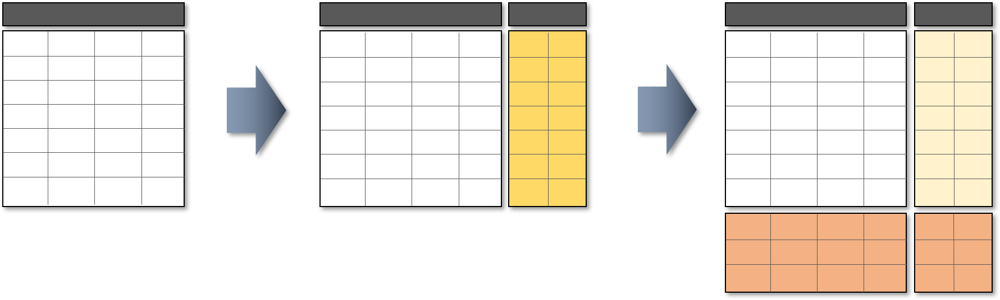

Welcome to INVST documentation!¶
Page contents¶
Warning
Use this project at your own risk. Authors are not responsible for losses due to the trading strategy adopted, or issues due to account access. Comdirect will block an account if 2-factor authentication is not properly responded.
Overview¶
Project goals¶
This project goal is to automate the operation of trading in the market, such as stocks or ETF’s (Exchange Traded Fund). In priciple the same approach can be adopted and extended to Cryptocurrencies, where the limitation is on the trading platformed used, if it permits such operations or not.
The goal is not to operate as high-frequency trading, but like a regular trader. The aimed advantages for the project is then on the potential of analysing a bigger amount of data (different stocks or products) at a short time; apply consistent mathematical and physical models, due to the major amount of data and tools available.
This project is split into a few major elements or steps:
Fetch market data series (history)
Analyze data for taking decisions (hold, buy, sell)
Automatic execute an order into a broker
Fetch account status
Fetch market data series (history)¶
The first element is to provide an encapsulation for accessing trading values history for a given ticker by using the AlphaVantage API. Although othernnsources are possible, they were not completely implemented yet. The output forna chosen ticker (stock) is a Pandas dataframe containing the open-high-low-closennvalues, also known as OHLC. More data is also available in the dataframe, as thenvolume and adjusted close values, for example.
To work with the project an API key to AlphaVantage is necessary. Please follow
the instructions on their website to acquire one. Once available, a file named
api-cfg-access.json need to be placed directly in the cfg folder. The
structure of the Json data follows the template below, where <YOUR API KEY>
needs to be replaced by the string provided as API key:
{
"api": {
"fetching": {
"AlphaVantage": {
"user_data": {
"APIKEY": "<YOUR API KEY>"
}
}
}
}
}
For this goal, the core implementation is done in the data_access.py file.
Analyze data for taking decisions (hold, buy, sell)¶
The analysis of the data in order to decide on an action to be taken is not straight forward, since there are plural methodologies available, on many levels of commplexity and success rate. See the section “Strategy Principles” for more information.
The goal is not to expect very high success rate in the gains, but at least have consistent improvements from a buy-hold strategy.
The very initial implementation is based on a simple MACD (Moving Average Convergence Divergence) method. However the basic framework around is intended to cover more general cases. The framework consists of:
Pre-Process data: Adequate or fix data sets before analysis.
Apply individual methods: Any possible method of analysis can be applied independent from each other. The target is that each one produces its own action recommendation (buy, sell or hold). Example of methods used on the analysis:
MACD (Moving Average Convergence Divergence)
RSI (Relative Strength Index)
Bollinger Bands
Arbitration: Evaluate all the previous recommendations and produces a final recommendation.
The basic design of this work is to always aggregate the new data into the original Pandas dataframe, so results from analysis or any operations, are always directly available, shall more complex operations be necessary.
In the framework, a metric (or many) is necessary to verify the success obtained. As as additional steps towards analysis, each method will produce a graphical report to evaluate and also debug the results.
Execute an order into a broker¶
This step is not implemented yet.
Fetch account status¶
As a mean to provide capacity to manage the operation, the Comdirect account
status is tracked by fetching all the current balances and depots informations
(values, prices), which are provided as Pandas dataframes and can be stored as
Micrsoft Excel files, for example, as provided in example.py, or stored in
databases for further analysis (e.g. display evolution in chart).
In terms of implementation, all the Comdirect API related access and
handling is done by the session.py.
For access, similar to other cases above, the information must be provided in
the api-cfg-access.json (to be placed in the cfg folder). The structure
to be followed:
{
"api": {
"trading": {
"Comdirect": {
"user_data": {
"client_id": "<YOUR CLIENT ID>",
"client_secret": "<YOUR CLIENT SECRET>",
"account_number": "<YOUR ACCOUNT NUMBER>",
"pin": "<YOUR ACCOUNT PIN>"
}
}
}
}
}
The client ID and secret can be obtanined from the Comdirect website. Please follow the instructions from their API documentation on how to obtain them.
Strategy principles¶
To cover the principles, the starting point will be the OHLC (Open High Low Close) data table for Amazon (AMZN) between 10.12.2021 and 09.11.2021:
Date |
Open |
High |
Low |
Close |
Volume |
|---|---|---|---|---|---|
12/10/21 |
3508,34 |
3518,54 |
3410,00 |
3444,24 |
3034488 |
12/09/21 |
3515,00 |
3539,39 |
3482,79 |
3483,42 |
2303091 |
12/08/21 |
3523,01 |
3543,60 |
3495,01 |
3523,16 |
2262683 |
12/07/21 |
3492,00 |
3549,99 |
3466,69 |
3523,29 |
3320536 |
12/06/21 |
3393,00 |
3473,91 |
3338,69 |
3427,37 |
3443000 |
12/03/21 |
3455,00 |
3469,865 |
3338,60 |
3389,79 |
4035550 |
12/02/21 |
3460,00 |
3492,70 |
3423,75 |
3437,36 |
3236288 |
12/01/21 |
3545,00 |
3559,88 |
3441,60 |
3443,72 |
3756995 |
11/30/21 |
3563,50 |
3585,77 |
3492,01 |
3507,07 |
4001107 |
11/29/21 |
3547,644 |
3596,00 |
3531,50 |
3561,57 |
3265557 |
11/26/21 |
3602,095 |
3633,50 |
3504,15 |
3504,56 |
2991297 |
11/24/21 |
3562,67 |
3613,64 |
3536,85 |
3580,41 |
2328018 |
11/23/21 |
3585,04 |
3621,05 |
3527,71 |
3580,04 |
3692246 |
11/22/21 |
3676,377 |
3713,455 |
3567,50 |
3572,57 |
4847850 |
11/19/21 |
3712,69 |
3762,145 |
3675,72 |
3676,57 |
4946203 |
11/18/21 |
3566,35 |
3704,20 |
3561,00 |
3696,06 |
5703538 |
11/17/21 |
3564,72 |
3587,245 |
3545,35 |
3549,00 |
2560270 |
11/16/21 |
3539,00 |
3576,50 |
3525,146 |
3540,70 |
2217071 |
11/15/21 |
3537,00 |
3593,88 |
3525,81 |
3545,68 |
2929719 |
11/12/21 |
3485,00 |
3540,726 |
3447,05 |
3525,15 |
2689434 |
11/11/21 |
3513,00 |
3543,24 |
3467,47 |
3472,50 |
2264406 |
11/10/21 |
3563,87 |
3605,45 |
3463,09 |
3482,05 |
4027422 |
11/09/21 |
3515,25 |
3593,77 |
3501,425 |
3576,23 |
4294922 |
The strategies for investiment covered here are basically of 2 types:
Momentum analysis
Prediction based on neural networks
The two have different ways of working. The former is based on an “inertia” of the market, relying mostly that the market tries to correct itself whenever oversold or overbought. Like a physical system, the mostly a position is off balance, the stronger the correction is expected.
The second method is based on RNN (recurrent neural netoworks). Based on the history of price for a stock, which is supplied to a RNN for learning, new data (future) is predicted.
A major difference is on the way data is handled by both of the methods. While the first uses the history and suggests an outcome which tend to be valid for a few days or weeks, due to the system inertia, the second will produce much more shorter term predictions if applied to the actual price (e.g. closing price), since it tries to replicate the feature performance. Of course the same method can be equally applied to other values or indicators, such a moving average (where the fast changing component is filtered out) or to a MACD histogram.
As an illustration of the different structure of the outcomes, the table below shows a general outcome based on the data above for Amazon, for an analysis ran on the 10.12.2021:
Date |
Close |
Momentum Analysis |
NN Analysis |
|---|---|---|---|
12/17/21 |
Prediction |
||
12/16/21 |
Prediction |
||
12/15/21 |
Prediction |
||
12/14/21 |
Prediction |
||
12/13/21 |
Prediction |
||
12/12/21 |
Prediction |
||
12/11/21 |
Prediction |
||
12/10/21 |
3444,24 |
Buy/Hold/Sell |
Input Data |
12/09/21 |
3483,42 |
Buy/Hold/Sell |
Input Data |
12/08/21 |
3523,16 |
Buy/Hold/Sell |
Input Data |
12/07/21 |
3523,29 |
Buy/Hold/Sell |
Input Data |
12/06/21 |
3427,37 |
Buy/Hold/Sell |
Learning Data |
12/03/21 |
3389,79 |
Buy/Hold/Sell |
Learning Data |
12/02/21 |
3437,36 |
Buy/Hold/Sell |
Learning Data |
12/01/21 |
3443,72 |
Buy/Hold/Sell |
Learning Data |
11/30/21 |
3507,07 |
Buy/Hold/Sell |
Learning Data |
11/29/21 |
3561,57 |
Buy/Hold/Sell |
Learning Data |
11/26/21 |
3504,56 |
Buy/Hold/Sell |
Learning Data |
11/24/21 |
3580,41 |
Buy/Hold/Sell |
Learning Data |
11/23/21 |
3580,04 |
Buy/Hold/Sell |
Learning Data |
11/22/21 |
3572,57 |
Buy/Hold/Sell |
Learning Data |
11/19/21 |
3676,57 |
Buy/Hold/Sell |
Learning Data |
11/18/21 |
3696,06 |
Buy/Hold/Sell |
Learning Data |
11/17/21 |
3549,00 |
Buy/Hold/Sell |
Learning Data |
11/16/21 |
3540,70 |
Buy/Hold/Sell |
Learning Data |
11/15/21 |
3545,68 |
Buy/Hold/Sell |
Learning Data |
11/12/21 |
3525,15 |
Buy/Hold/Sell |
Learning Data |
11/11/21 |
3472,50 |
Buy/Hold/Sell |
Learning Data |
11/10/21 |
3482,05 |
Buy/Hold/Sell |
Learning Data |
11/09/21 |
3576,23 |
Buy/Hold/Sell |
Learning Data |
Especially for the Neural-Network example above, the length of the data is chosen just to illustrate its presence, and not the actual length. As observed above, the last input data used to make the prediction has a length of 4.
Combining both methods is the ultimate goal, since there is a potential to optmize the strategy combining the benefits of each other.
As another demonstration of the data organization, see the figure below. The image presents the way the data is handled: first the methods will add their signals to the structure, second the predictions are done to extrapolate the data into the future.
{kind=link}
To do’s and future work¶
Fetch the data from tickers besides AlphaVantage, as it only supports stocks. Adding other sources could support ETF’s and crypto’s for instance.
Fetch data from API’s which provide more up-to-data data, without bigger delays such as 1-day delay, since it can impact the algorithm decision.
Improve the trading strategies.
Optmize parameters in the RNN, since it is still based on the vanilla version.
Complete the trading implementation, as the order placement is missing. Currently only the fetching of account and depot information is implemented.
Setup and operations¶
Virtual Environment¶
It is recommended to run the project with a Virtual Environment. To do so, first make sure to have the package available in you computer:
pip install virtualenv
This step should be common between Linux and Windows systems.
Once available (succesful install), a virtual environement can be created by the following steps:
Go to project root folder
Run the command below, where <name_of_virtualenv> is to be replacd by the name desired, for example: venv. Note that the command for python might change depending on the installation:
python3 -m venv <name_of_virtualenv>
The commmand above should be similar between Linux and Windows systems.
After creation, the virtual environmnet can be started by the following command. Keep in mind that the <name_of_virtualenv> is to be replaced by the name definied on the previous step. for Linux:
source <name_of_virtualenv>/bin/activate
For Windows systems:
<name_of_virtualenv>/Scripts/activate
Once started, in the terminal it will be indicated that a virtual environment is running by a tag (<name_of_virtualenv>).
After started the virtual environement, the necessary packages for this project can be installed by the command:
pip install -r src/Requirements.txt
Later, the environmenet can be deactivate when necessary by the command:
deactivate
Accessing the documentation¶
The documentation can be generated by using Sphinx. In order to do so, first acrivate the virtual environement, and then from the project docs folder use the command below. This is valid for Linux or Windows when using its terminal:
make html
In case of Windows with Powershell, the proper command is:
.\make.bat html
The resulting documentation (index.html) is available in the folder docs/build/html.
Unit testing¶
Unit test cases are available in the tests folder. The tests are based in the pytest package. To run all the tests, after activating the virtual environement, use the command:
pytest tests/
In case to run individual test files, for example test_access.py, then use the command:
pytest tests/test_access.py
Use examples¶
example.py¶
Example for the use of the project. The following steps are taken:
Create a logger, so all the steps during the execution are presented, either to have information of the current status to the user, or to support debugging. By default, the display to the user is done with info level, whilst the storrage in the log files are done with debug level.
Load the configurations, since the project depends on configuration input for the access of the API’s, the .json files are loaded and the content stored in dictionaries to be used by the next steps.
Fetch ticker data from AlphaVantage API. For example purpose, two cases are done, first trying to fetch from an invalid ticker (GOOG2) and then in sequence trying to fetch for a list of valid symbols.
Perform analysis per symbol, producing a result for each one. See the documentation for the strategy analysis for more details.
Display on the console an overview of the results.
Fetch depot status from Comdirect account, where for each available element in the depot account, its values (e.g. current price, purchase price) are returned to be used for performance tracking.
Store the results in Microsoft Excel files, saving a different file per day (current date is used in the filename), and each data having a separate sheet in the .xlsx file.
Other files in the automation folder can be used as examples.
Automation¶
As a general note when running the automation scripts, to be able to successfu execute them, due to importing and relative path management, the following command is to be used from the project root folder:
python -m automation.<Script name>
For the <Script name> the .py extension shall not be used.
comdirect_status_report.py¶
Automation script to display charts and reports of the data collected and stored in the Excel files in the export folder. The script will parse the Excel data in the files.
This script is based on Dash and Plotly, and the execution will result into a server which can be accessed by the addressed informed on the console, for example: http://127.0.0.1:8050/
Only the files matching the pattern Export_Comdirect_ are evaluated, so any other files in the folder will be ignored.
comdirect_status_update.py¶
Script for getting the current values from Comdirect and storing into Excel files, to be used as a tracker.
run_analysis.py¶
Script for sequence analysis of a list of symbols / tickers and providing a report of the overall results for performance evaluation.